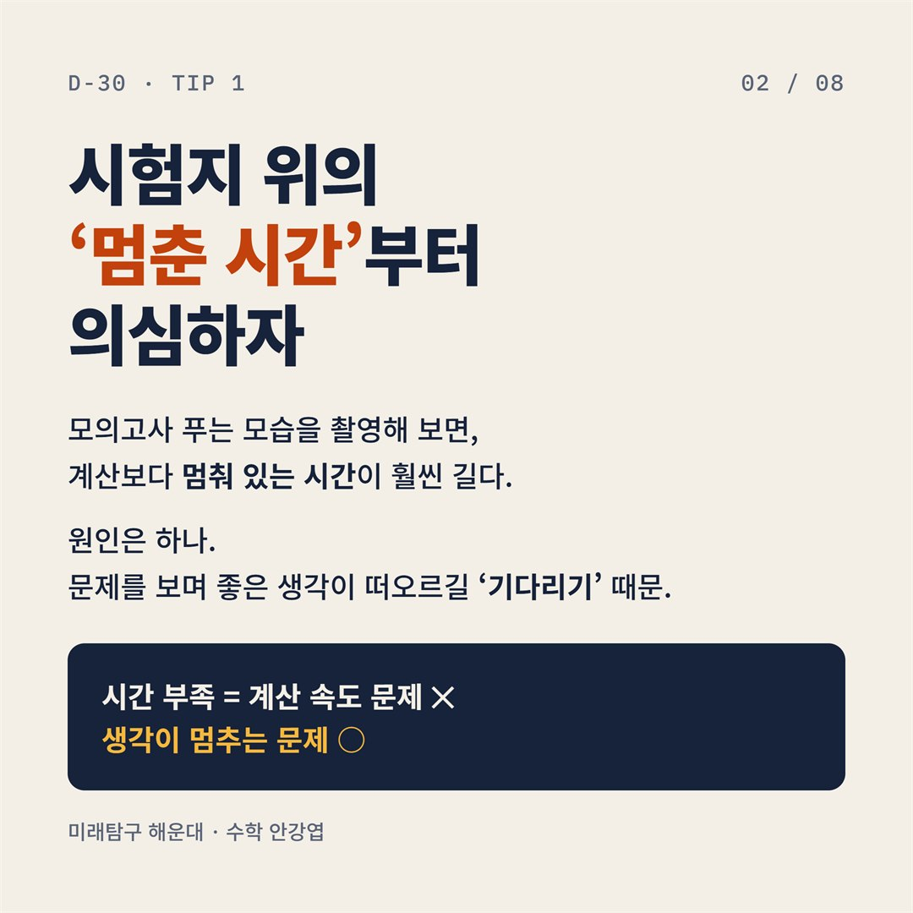
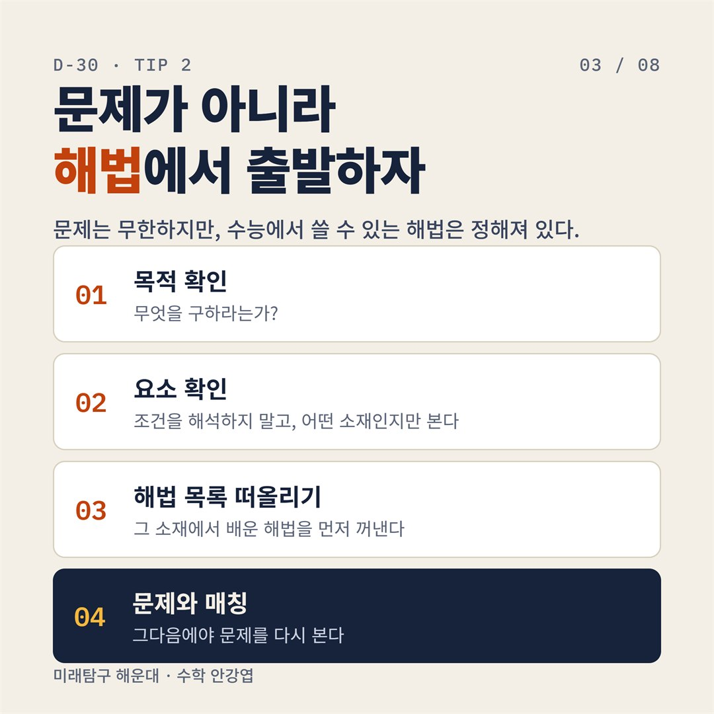
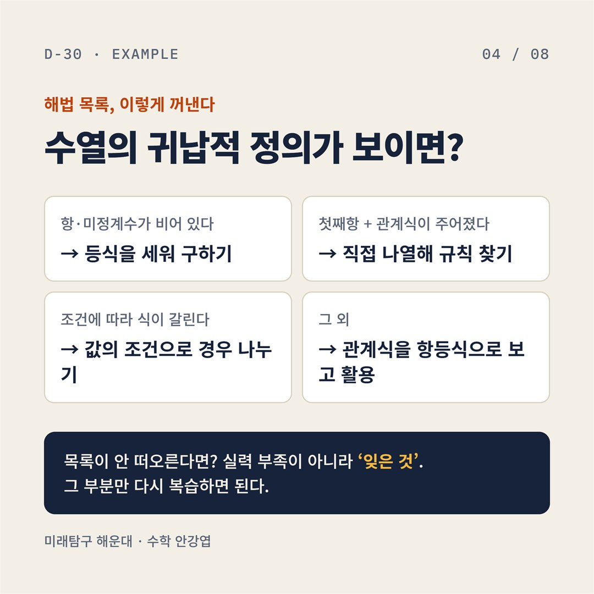
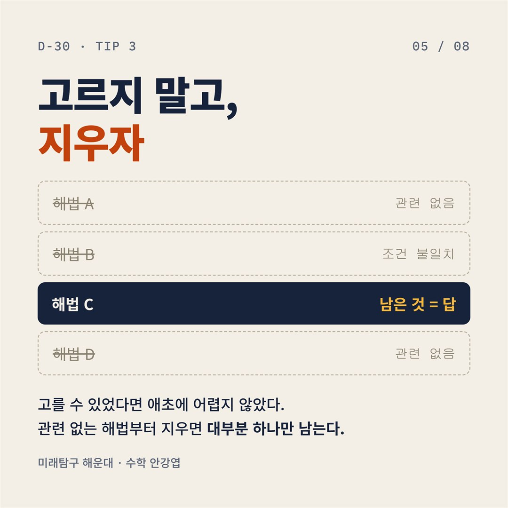
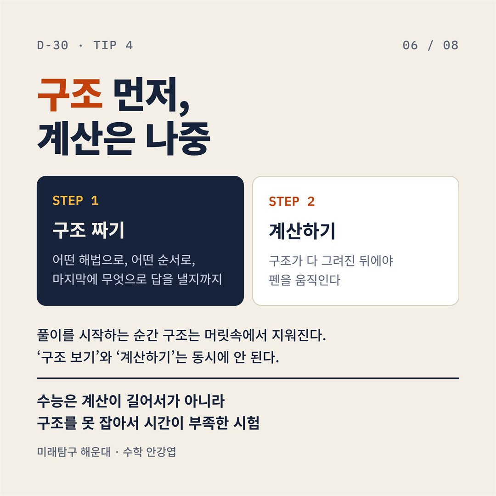
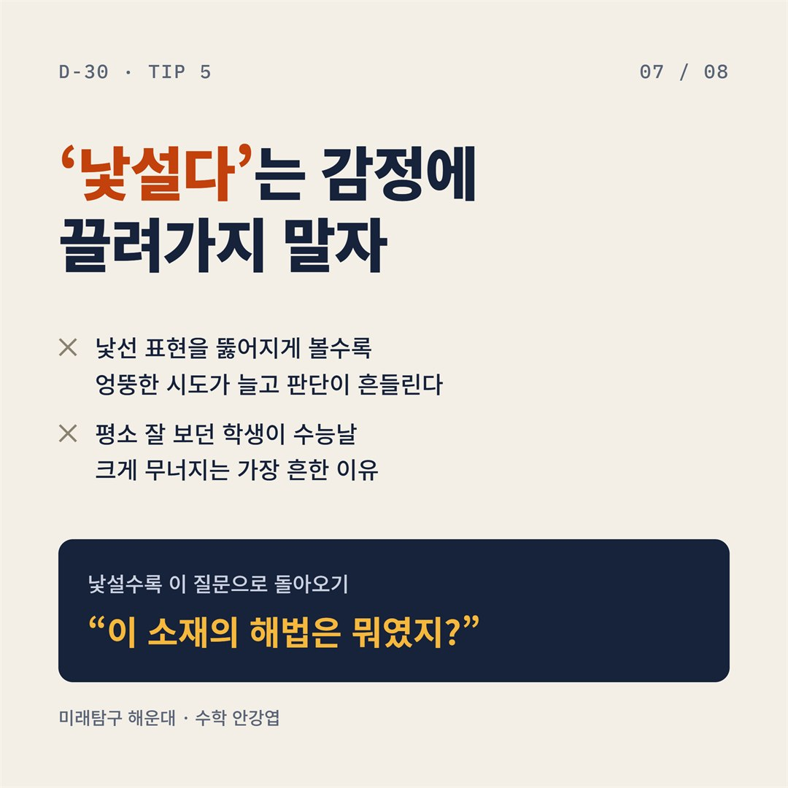
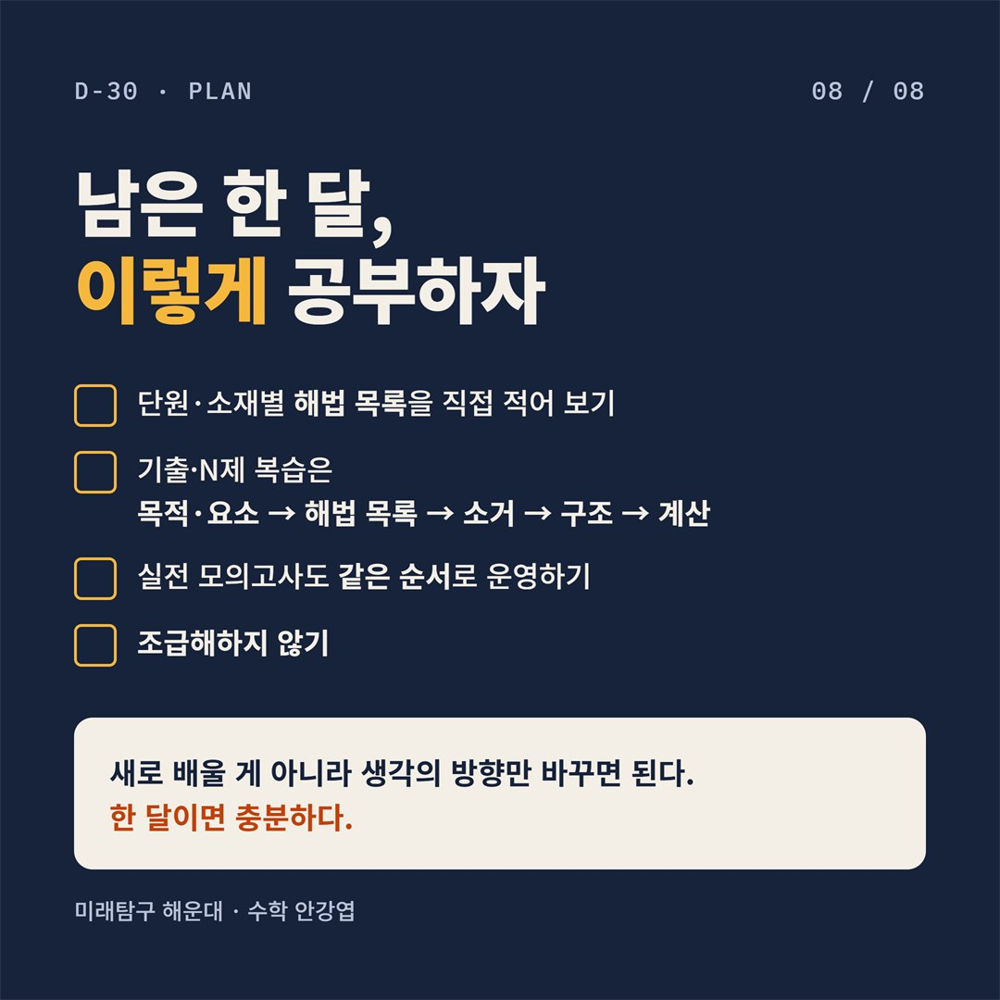

수능 D-30, 이제는 생각의 방향을 바꿀 때

새로 배우기보다, 가진 실력을 시험장에서 전부 꺼내 쓰는 5가지를 정리했습니다.
1. 시험지 위의 '멈춘 시간'부터 의심하자

모의고사 푸는 모습을 촬영해 보면, 계산보다 멈춰 있는 시간이 훨씬 깁니다.
원인은 하나. 문제를 보며 좋은 생각이 떠오르길 '기다리기' 때문입니다. 시간 부족은 계산 속도 문제가 아니라 생각이 멈추는 문제입니다.
2. 문제가 아니라 해법에서 출발하자

문제는 무한하지만, 수능에서 쓸 수 있는 해법은 정해져 있습니다.
- 목적 확인: 무엇을 구하라는가?
- 요소 확인: 조건을 해석하지 말고, 어떤 소재인지만 본다
- 해법 목록 떠올리기: 그 소재에서 배운 해법을 먼저 꺼낸다
- 문제와 매칭: 그다음에야 문제를 다시 본다
해법 목록, 이렇게 꺼낸다: 수열의 귀납적 정의가 보이면?

- 항·미정계수가 비어 있다 → 등식을 세워 구하기
- 첫째항 + 관계식이 주어졌다 → 직접 나열해 규칙 찾기
- 조건에 따라 식이 갈린다 → 값의 조건으로 경우 나누기
- 그 외 → 관계식을 항등식으로 보고 활용
목록이 안 떠오른다면? 실력 부족이 아니라 '잊은 것'. 그 부분만 다시 복습하면 됩니다.
3. 고르지 말고, 지우자

고를 수 있었다면 애초에 어렵지 않았습니다. 관련 없는 해법부터 지우면 대부분 하나만 남습니다.
4. 구조 먼저, 계산은 나중

어떤 해법으로, 어떤 순서로, 마지막에 무엇으로 답을 낼지까지 구조를 짭니다. 구조가 다 그려진 뒤에야 펜을 움직입니다.
풀이를 시작하는 순간 구조는 머릿속에서 지워집니다. '구조 보기'와 '계산하기'는 동시에 안 됩니다. 수능은 계산이 길어서가 아니라 구조를 못 잡아서 시간이 부족한 시험입니다.
5. '낯설다'는 감정에 끌려가지 말자

낯선 표현을 뚫어지게 볼수록 엉뚱한 시도가 늘고 판단이 흔들립니다. 평소 잘 보던 학생이 수능날 크게 무너지는 가장 흔한 이유입니다.
낯설수록 이 질문으로 돌아오세요. "이 소재의 해법은 뭐였지?"
남은 한 달, 이렇게 공부하자

- 단원·소재별 해법 목록을 직접 적어 보기
- 기출·N제 복습은 목적·요소 → 해법 목록 → 소거 → 구조 → 계산
- 실전 모의고사도 같은 순서로 운영하기
- 조급해하지 않기
새로 배울 게 아니라 생각의 방향만 바꾸면 됩니다. 한 달이면 충분합니다.
수능 수업 상담이 필요하시면 언제든 문의 주세요.